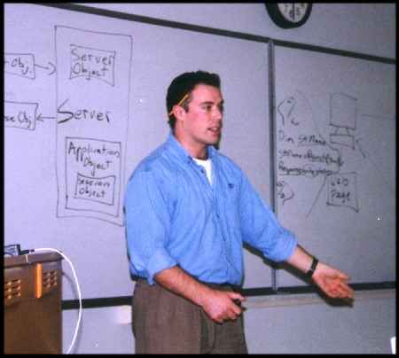
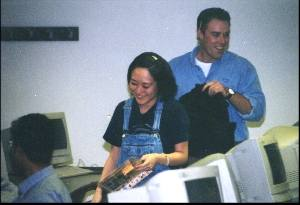

10/27/1999
The October 27 meeting started with a surprise: our guest speaker from IBM,
who was scheduled to talk about CORBA, had an urgent client engagement and
wasn't able to present that night. The officers of the Club were informed about
4 hours before the presentation and it looked like the meeting wasn't going to
happen...
Brian Lawton - the president of ISPC - showed a lot of creativity and used h
is vast technical skills to prepare a presentation on Active Server Pages
technology.
Considering the very short notice that Brian had to prepare, the presentation
that he gave was a huge success. We'd like to thank all of our club members who
showed their support and understanding of the situation.
Even though our scheduled speaker wasn't there, we still had some fun give-aways
for our members as you can see on the pictures below.
Why did Brian present ASP? What is ASP?

Brian Lawton gives an impromptu presentation on ASP.
Active Server Pages is Microsoft's response to the needs of those webmasters
who want to make their pages live and interactive without having to do tedious
CGI programming and learn new scripting languages.
Based on VBScript, ASP technologies allows you to create intelligent website
s with database websites much easier than "traditional" technologies. The
learning curve to master basic ASP techniques is minimal, software to learn and
implement ASP software components is available for free from Microsoft's
website.
All these facts make ASP a very viable Internet technology and a "must-have"
skill for webmasters. A large number of websites implement ASP, starting at
Microsoft ("we have to eat our own dog food" said Steve Ballmer, Microsoft's
President) and ending with many amateur home pages.
Contrary to popular opinion, ASP is a cross-platform technology. It can r un
on non-Microsoft web-servers using third-party ASP scripting tools, such as one
produced by Chili!Soft Inc.
If you think that hosting your website on an NT server is expensive, it'll be
good news for you that NT web-hosting plans are priced in the same range as
traditional Unix hosting. Most of g. Most of those plans allow you to put your
MS Access database online without any additional charges.

Our prize winners
For those of you who are interested in learning more about ASP we recommend
these wonderful books (linked to Amazon's website):
"Beginning Active Server Pages" from Wrox Press
"Professional Active Server Pages 2.0" and "Professional Active Server Pages
3.0" from Wrox again.
Some helpful links for those who are interested in learning more about AS P:
Online tutorials, large free components directory and some sample
applications can be found at
www.activeserverpages.com
In depth articles on programming, IIS and ASP can be found at:
www.15seconds.com
Other very useful sites: